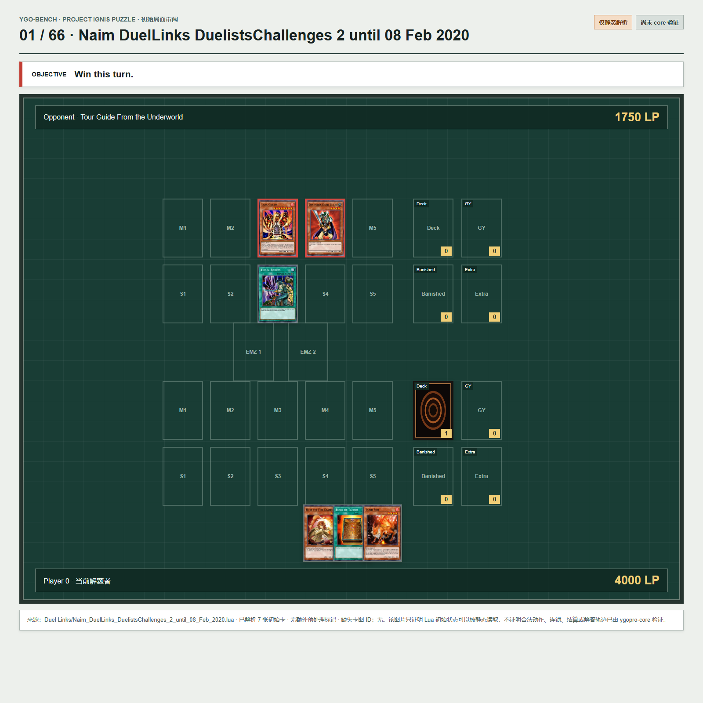

理解
卡牌条件、cost、target、OPT、限制、连锁和效果结算，并用规则证据或引擎状态核验。
BENCHMARK DESIGN
卡牌条件、cost、target、OPT、限制、连锁和效果结算，并用规则证据或引擎状态核验。
冻结 TCG/OCG 卡池与禁限表，测试合法性、错误定位、最小修复、补全和环境迁移。
局部合法动作、响应时点、长组合、打断恢复、隐藏信息、资源管理和完整对局。
CURRENT SNAPSHOT
候选题不等于专家 Gold。公开审阅结果用于筛选和修订；正式答案需要独立双标与裁决。

REPRODUCIBLE REVIEW
审阅器展示冻结环境、来源、资产问题和引擎资格状态。公开版本的标注保存在当前浏览器中，可导入或导出版本化 JSONL，不会直接改写 canonical Gold。
开始审阅